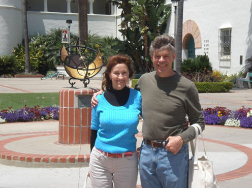

About Us

My name is Olga, and I am originally from Russia. I studied seamstress work after high school in the late 1980s.
At that time the Soviet Union produced a lot of cloth, as factories had production quotas. But the clothes were very boring! I worked for a boutique that smuggled interesting dress patterns from London, Paris, and New York. We then made elegant dresses for clients from the surplus cloth. This was a high volume, full time, dressmaking job.
As I honed my skills, I had the confidence to go freelance. During the collapse of the Soviet Union, there was not much work or even food. But I acquiredthe basic necessities from my freelance dressmaking.
As Russia recovered, I gained my Bachelors and Masters Degrees, but still kept freelancing in the evening making and altering clothes. The freelancing bought me an apartment!
Then, as the best piece of good luck, I met David, while he was in Russia, learning the language. After a while, we married, moved to Phoenix, and I learned English. I became a US Citizen. I love the warm weather after the cold of Russia, and being married is very special after a lot of years alone.
I started again with my freelance work, and I welcome your alterations, dresses, cushions, curtains, and special projects.